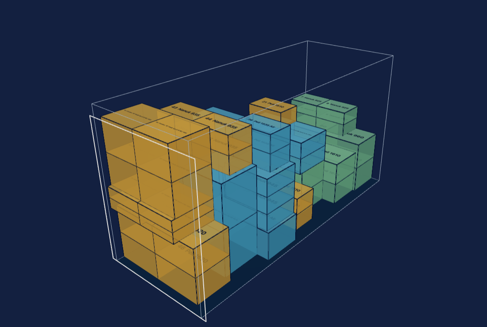

Inventory Planner · Ladeplanung · English
Passt das alles in den Transporter?
Ladeplanung für Veranstaltungstechnik — gerechnet für den Laderaum, den du wirklich hast, nicht für einen Quader.

Was hier anders ist
- Transporter statt nur Sattelzug. Radkästen, Dachkanten, Hecktüröffnung: der Laderaum ist kein Quader, und der Packer rechnet mit dem, der da ist.
- Cases, wie sie wirklich reisen. Rollen, Rollenteller im Deckel, erlaubte Lagen (stehend, auf der Seite, hochkant), Stapelgrenzen — statt nackter Kisten.
- Lastverteilungsplan zum Ausdrucken. Schwerpunkt und Achslasten aus den gesetzten Positionen, dazu Ladeplan je Lage, Dock-Checkliste und Case-Etiketten.
- Der Bestand weiß, was im Case liegt. Fehlt Case 7, fehlt auch die Ersatz-Funkstrecke darin — weil die Ladeplanung Teil des Lagers ist und nicht bei einer Tabelle anfängt.
Warum eine Vorbestellung
Die Ladeplanung läuft und lässt sich oben ausprobieren. Ob daraus ein gepflegtes, bezahltes Werkzeug wird, entscheidet die Nachfrage: erst wenn genug Leute zahlen, fließen die nächsten Wochenenden hinein.
- Gründerpreis: 25 € im Monat, solange dein Abo läuft. Mit der Vorbestellung zahlst du den ersten Monat.
- Kommt nicht genug zusammen, bekommst du den Betrag nach Testende (Datum folgt) vollständig zurück. Auf Wunsch jederzeit vorher.
- Abgewickelt wird über einen Zahlungsdienstleister (Merchant of Record), der Rechnung und Umsatzsteuer ausstellt.
Nur ausprobieren?
Auch das hilft. Miss deinen Transporter unter Vehicles aus — die Ansicht führt einmal ums Fahrzeug — und sag, wo es hakt.
Schick die exportierte Fahrzeugdatei (Export vehicles) an . Jede Datei zeigt, welche Fahrzeuge wirklich gefahren werden.
Lars Zumpe Medienproduktion. Der Lastverteilungsplan rechnet und zeigt; die Verantwortung für die Ladungssicherung bleibt bei Fahrer und Verlader.